Trade Notes / Origin Roulette
Shrimp sourcing stopped being a price spreadsheet.
For 2026 books, the winning origin is the one that clears tariff gates, certification depth, disease windows, and landed-cost risk.

01 / 08Trade Notes / Origin Roulette
For 2026 books, the winning origin is the one that clears tariff gates, certification depth, disease windows, and landed-cost risk.
What broke
The U.S. would take every kilo.
Ecuador's cost edge would narrow.
Value-added processing was a side quest.
New buyer question
It is: which shrimp clears the regulatory gate, keeps the landed-cost curve sane, and does not trap the book inside one origin's policy risk?
risk > volume
Origin map
Decision rule
Tariffs and landed cost dominate. Ecuador and India carry the book; Indonesia is a certified tranche.
Regulatory trajectory dominates. Residue control, approvals, SIMP, forced-labour issues, and CATCH decide durability.
Asymmetric bets
India cooked 21/25 for EU retail can beat Ecuadorian HLSO on margin.
Indonesia can be convex U.S. cover if certification keeps holding.
30-count vs 60-count can flip India vs Ecuador economics.
Operator problem
Origin strategy now touches supplier emails, ERP items, tariff memos, QA files, certification dates, WhatsApp exceptions, and customer commitments.
the book is a workflow
Ubik
Above CRM, ERP, email, WhatsApp, documents, and approvals. Human-reviewed agent workflows for perishable trade teams.